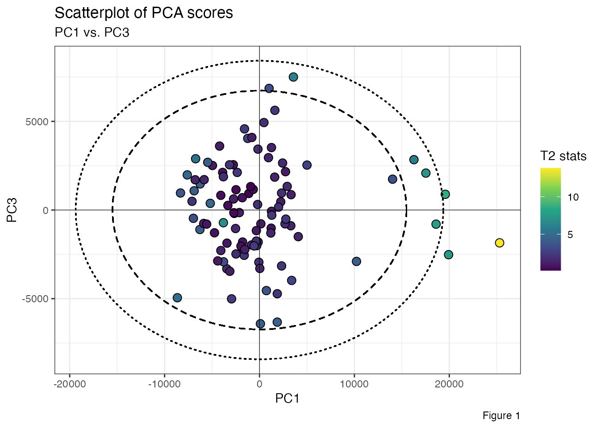

This package is designed to help draw the Hotelling ellipse on the PCA or PLS score scatterplot. HotreellingEllipse computes the Hotelling’s T\(^2\) value, the semi-minor axis, the semi-major axis along with the x-y coordinate points for drawing a confidence ellipse based on Hotelling’s T\(^2\). Specifically, there are two functions available:
ellipseParam(), is used to calculate the Hotelling’s T\(^2\) and the semi-axes of an ellipse at 99% and 95% confidence intervals.
ellipseCoord(), is used to get the x and y coordinates of a confidence ellipse at user-defined confidence interval. The confidence interval is set at 95% by default.
In this example, we use FactoMineR::PCA() to perform the Principal Component Analysis (PCA) from a LIBS spectral dataset specData and extract the PCA scores as a data frame tibble::as_tibble().
set.seed(123)
pca_mod <- specData %>%
select(where(is.numeric)) %>%
PCA(scale.unit = FALSE, graph = FALSE)
pca_scores <- pca_mod %>%
pluck("ind", "coord") %>%
as_tibble() %>%
print()
#> # A tibble: 100 × 5
#> Dim.1 Dim.2 Dim.3 Dim.4 Dim.5
#> <dbl> <dbl> <dbl> <dbl> <dbl>
#> 1 25306. -10831. -1851. -83.4 -560.
#> 2 -67.3 1137. -2946. 2495. -568.
#> 3 -1822. -22.0 -2305. 1640. -409.
#> 4 -1238. 3734. 4039. -2428. 379.
#> 5 3299. 4727. -888. -1089. 262.
#> 6 5006. -49.5 2534. 1917. -970.
#> 7 -8325. -5607. 960. -3361. 103.
#> 8 -4955. -1056. 2510. -397. -354.
#> 9 -1610. 1271. -2556. 2268. -760.
#> 10 19582. 2289. 886. -843. 1483.
#> # … with 90 more rowsTo add a confidence ellipse, we use the function ellipseParam(). We want to compute the length of the ellipse semi-axes for bivariate data within the PC1-PC3 subspace. To do this, we set the number of components, k, to 2, while the pcx and pcy inputs are respectively set to 1 and 3.
res <- ellipseParam(data = pca_scores, k = 2, pcx = 1, pcy = 3)
str(res)
#> List of 4
#> $ Tsquare : tibble [100 × 1] (S3: tbl_df/tbl/data.frame)
#> ..$ value: num [1:100] 13.8 2.08 1.06 2.82 1.4 ...
#> $ Ellipse : tibble [1 × 4] (S3: tbl_df/tbl/data.frame)
#> ..$ a.99pct: num 19369
#> ..$ b.99pct: num 8416
#> ..$ a.95pct: num 15492
#> ..$ b.95pct: num 6732
#> $ cutoff.99pct: num 9.76
#> $ cutoff.95pct: num 6.24We can extract parameters for further use:
a1 <- pluck(res, "Ellipse", "a.99pct")
b1 <- pluck(res, "Ellipse", "b.99pct")
a2 <- pluck(res, "Ellipse", "a.95pct")
b2 <- pluck(res, "Ellipse", "b.95pct")
Tsq <- pluck(res, "Tsquare", "value")
pca_scores %>%
ggplot(aes(x = Dim.1, y = Dim.3)) +
geom_point(aes(fill = Tsq), shape = 21, size = 3, color = "black") +
scale_fill_viridis_c(option = "viridis") +
geom_ellipse(aes(x0 = 0, y0 = 0, a = a1, b = b1, angle = 0), size = .5, linetype = "dotted") +
geom_ellipse(aes(x0 = 0, y0 = 0, a = a2, b = b2, angle = 0), size = .5, linetype = "dashed") +
geom_hline(yintercept = 0, linetype = "solid", color = "black", size = .2) +
geom_vline(xintercept = 0, linetype = "solid", color = "black", size = .2) +
labs(
title = "Scatterplot of PCA scores",
subtitle = "PC1 vs. PC3",
x = "PC1",
y = "PC3",
fill = "T2 stats",
caption = "Figure 1"
) +
theme_bw()
Another way to add Hotelling ellipse is to use the function ellipseCoord(). This function provides the x and y coordinates of the confidence ellipse at user-defined confidence interval. The confidence interval confi.limit is set at 95% by default. Below, the x-y coordinates are estimated based on data projected into the PC1-PC3 subspace.
xy_coord <- ellipseCoord(data = pca_scores, pcx = 1, pcy = 3, conf.limit = 0.95, pts = 500)
str(xy_coord)
#> tibble [500 × 2] (S3: tbl_df/tbl/data.frame)
#> $ x: num [1:500] 15492 15491 15488 15481 15473 ...
#> $ y: num [1:500] -5.05e-13 8.48e+01 1.70e+02 2.54e+02 3.39e+02 ...